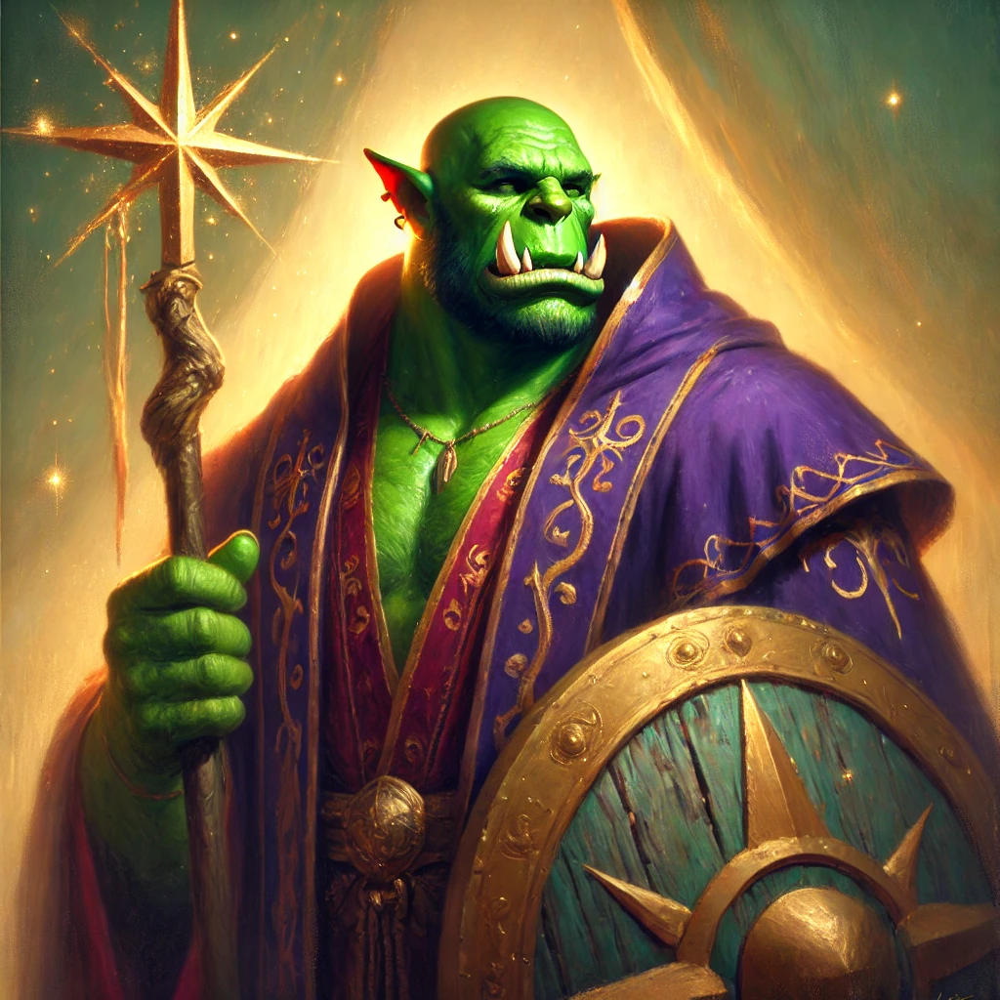

The Maker
Supreme power of this code
Name: Balda gunulbar (Benjmain Jonahs)Full Orc, Bladsinger Wizard
I am a junior, self-taught developer with a passion for creating clean, Christian-oriented tools on the web. My focus is on .NET 8's MAUI Blazor Hybrid, where I’ve developed a fair amount of knowledge through hands-on experience and an eagerness to learn.
How It All Began
My father, a software engineer for as long as I can remember, introduced me to programming. His influence and my curiosity led me to develop a deep interest in coding, especially in building tools and applications that align with my Christian values.
What I’m Proud Of
One of my proudest achievements is this site and my work on Sojourn.network, a Biblical hospitality network I developed with my father. These projects represent my drive for clean and Christian, internet-based tools.
When I'm Not Coding
Outside of coding, I spend my time with family or enjoy camping in nature.
Looking Ahead
As I continue to grow as a developer, my goal is to expand my skills, build my portfolio, and create tools that guide people to Christ.